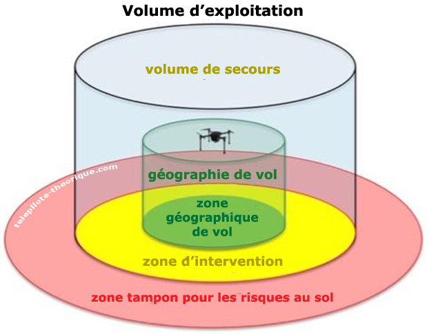
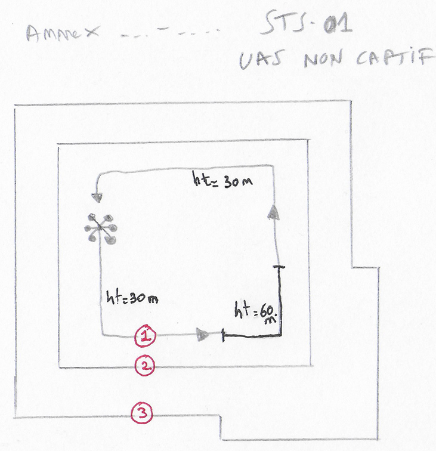

Généralités
Classes / catégories
- Pour un UAS de classe C5 ou C6, en cas de dégradation du service de liaison (commande et contrôle), le système
Alerte le télé-pilote. - Sauf dans le cas d'un drone captif, concernant la dégradation et/ou la perte du signal radio qui pourraient compromettre la sûreté de l'exploitation, le pilote à distance reçoit
Une alerte lorsque la liaison est sur le point d'être coupée ou de se dégrader, ainsi qu'une autre alerte lorsque la liaison est coupée. - Le risque intrinsèque lié à une exploitation d'un UAS en catégorie spécifique (scénario STS) par rapport à une exploitation en catégorie Ouverte est plus élevé car ?
Le risque des tiers au sol est plus important.
- En tant qu'exploitant, vous pouvez être tenu de procéder à une évaluation des risques de l'opération envisagée en utilisant la méthodologie connue sous le nom de
SORA : Specific Operations Risk Assessment (étude de risque spécifique). - La finalité du processus de notification, de traitement et de suivi des évènements de sécurité est...
De faire progresser la sécurité aérienne et non de déterminer d'éventuelles responsabilités.
- «L'ensemble des dangers pouvant conduire à des conflits de trajectoires et/ou des collisions dans l'espace aérien, entre aéronefs et ou d'autres dangers volants».
Au risque aérien. - L'analyse des risques doit logiquement intervenir entre...
L'évaluation des différentes options et la décision. - Le document qui contient les consignes et informations nécessaires au personnel d'exploitation pour assurer ses tâches est...
Le manuel d'exploitation (MANEX). - Lorsque l'aéronef sans équipage à bord évolue à proximité de personnes, le pilote à distance doit maintenir une distance latérale à toute personne non impliquée qui ne soit pas inférieure à l'altitude. Cette règle est...
La règle 1:1. - Dans le cadre de sa responsabilité générale, le télépilote veille à ce que l'environnement d'exploitation :
Soit compatible avec les limitations et conditions déclarées, y compris la zone au sol contrôlée définie par l'exploitant.
Scénarios
- Sous scénario STS-02, est-il possible de voler à plus de 2 km du pilote à distance avec 2 observateurs de l'espace aérien ?
Non, la distance d'éloignement du drone par rapport au pilote est limitée à 2 km. - Vous faites appelle à un observateur visuel en STS-01, vous devez vous assurer :
Qu'une communication claire et efficace soit maintenue entre vous. - Vérifiez si les affirmations suivantes sont justes ou fausses pour l'exploitation d'un drone sous scénario STS-01 :
1 - il est possible d'exploiter jusqu'à 2 aéronefs en même temps.
2 - le pilote ne doit pas se trouver à bord d'un véhicule en mouvement
1 est fausse, 2 est vraie.pareil pour STS-02
- Pour effectuer le lancement et la récupération d'UAS lancés par catapulte ou d'un moyen similaire, il est exigé en STS-02 pour atténuer le risque au sol :
De la faire en VLOS (en vue directe). - En scénario STS-02, pour réduire les risques aériens, il est :
Obligatoire de pré-programmer la trajectoire. - Pour limiter l'accroissement du risque aérien, la présence d'un observateur est :
Obligatoire en STS-02. - Pour effectuer le lancement et la récupération d'UAS lancés par catapulte ou d'un moyen similaire, il est exigé en STS-02 pour atténuer le risque au sol :
De la faire en VLOS (en vue directe). - La valeur du rayon centré sur le point de fixation de l'accroche au-dessus du sol de la zone contrôlée au sol pour un UAS captif en scénario STS-01 est égale :
à la longueur de l'accroche augmentée de 5 m. - En STS-02, les exigences opérationnelles imposent que la zone contrôlée au sol doit être entièrement située dans un environnement à faible densité de population :
Pour atténuer le risque au sol. - La distance à mettre en oeuvre, au-delà de la zone d'intervention, de la zone tampon pour les risques au sol en STS-02, est :
à minima la distance la plus probable restant à parcourir par l'UAS après l'activation du système d'interruption du vol (FTS).
Types d'atténuations
Stratégiques
- Les procédures d'atténuations stratégiques s'appliquent :
Avant le décollage. A l'examen, on vous demande de connaître les mesures d'atténuations techniques, opérationnelles, stratégiques et tactiques
- Dans le cadre d'un vol en scénario STS-01, vous vous faites assister d'un observateur visuel pour vous aider à limiter le risque aérien. Il s'agit d'une mesure d'atténuation :
Opérationnelle. - Une atténuation opérationnelle qui permet de réduire le risque aérien en STS-02, est notamment :
De s'assurer d'une visibilité horizontale de 5 km ou plus. - L'atténuation opérationnelle en STS-01 qui permet au télé-pilote de maintenir un balayage complet de l'espace aérien entourant l'UAS afin d'éviter tout risque de collision avec d'autres aéronefs, est un principe nommé :
Voir et éviter. - L'atténuation opérationnelle qui permet au télé-pilote de maintenir un balayage complet de l'espace aérien entourant l'UAS, de pressentir ou de détecter des conflits avec d'autres aéronefs afin d'éviter tout risque de collision, est un principe nommé :
Détecter et éviter.
- Les procédures d'atténuations tactiques s'appliquent :
Pendant le vol.
- L'ajout d'un système d'interruption du vol (FTS) sur un UAS est considéré comme une mesure d'atténuation des risques aériens de type :
Technique. - L'obtention d'informations sur la position géographique de l'UAS en STS-02 est une mesure d'atténuation du risque aérien :
Technique. - La fonction geocaging en STS-02 est une mesure d'atténuation du risque aérien :
Technique.
Procédures
- Un aéronef habité approche de votre zone de vol, la procédure recommandée est :
Vous descendez et interrompez votre vol. - En cas de perte de la liaison de commande de vol de l'UAS, si celui-ci dépasse une des limites de la zone tampon :
La fonction geocaging entraîne la coupure de l'alimentation électrique qui déclenche le dispositif de réduction d'impact au sol. - Un observateur de l'espace aérien constate la présence d'un aéronef habité qui va croiser la trajectoire du drone. Il doit :
Il informe le pilote à distance. - Vous apercevez un aéronef sans équipage à bord face au votre sur l'horizon. Il y a un risque de collision s'il...
Semble immobile et grossit. - En vol, je constate qu'il y a des tiers non impliqués dans la zone d'exploitation, ma réaction est :
Je me pose en les évitant. - Le risque au sol est réduit :
Par la mise en place de barrières ou d'un dispositif équivalent, adaptée en fonction de la densité de population. - Lors de l'exploitation d'un UAS à proximité immédiate d'une zone à population dense, une méthode adaptée pour protéger la zone de contrôle au sol est
La mise en place d'une clôture. - Le risque au sol est réduit :
Par l'emploi d'un dispositif pyrotechnique d'amortissement d'impact.
- En scénario STS-01, un système d'interruption du vol (FTS) est une mesure technique obligatoire pour le vol, qui également utilisée :
Pour atténuer le risque au sol. - Concernant le FTS, son but est de :
Diminuer l'angle d'impact au sol et d'arrêter le fonctionnement de l'UAS. - Le principe de fonctionnement d'un système d'interruption du vol (FTS) est par exemple
De couper l'alimentation électrique du drone pour entraîner sa chute.
Zones, Géographies, Volumes


- Suivant l'annexe, la zone n°1 du dessin d'un vol projeté en STS-01 correspond :
à la zone géographique de vol. 2 --> la zone d'inter ; 3 --> la zone tampon pour les risques au sol ; toutes les 3 --> zone contrôlée au sol - La zone géographique de vol est :
La projection de la géographie du vol sur la surface de la terre. - Pour l'exploitation d'un UAS en STS-01 et/ou STS-02, la zone d'intervention doit s'étendre au-delà de la ou des limites de la zone géographique de vol, d'au moins :
10 m. - «La zone au sol dans laquelle l'UAS est exploité et à l'intérieur de laquelle l'exploitant d'UAS peut garantir que seules les personnes participant à l'exploitation sont présentes», cette définition correspond à
La zone contrôlée au sol. - La zone contrôlée au sol se compose des zones :
1 - géographique de vol
2 - d'intervention
3 - tampon pour les risques au sol
4 - d'interdiction de survol
5 - de protection juridique
1, 2 et 3. - La zone au-dessus de la surface de la terre qui entoure le volume d'exploitation, et est définie de manière à réduire au minimum les risques pour les tiers à la surface dans l'éventualité où l'aéronef sans équipage à bord sortirait du volume d'exploitation, est
La zone tampon pour les risques au sol. - «une zone au-dessus de la surface de la Terre qui entoure le volume d'exploitation et est définie de manière à réduire au minimum les risques pour les tiers à la surface dans l'éventualité où l'aéronef sans équipage à bord sortirait du volume d'exploitation».Cette définition correspond à la zone
Tampon pour les risques au sol. - Le ou les volumes d'espace aérien, définis dans l'espace et dans le temps, dans lesquels l'exploitant d'un UAS prévoit d'effectuer le vol en procédures normales d'exploitation, correspond à la définition suivante
La géographie de vol. - La hauteur maximale du volume d'exploitation ne dépasse pas :
30 m au-dessus de la hauteur maximale autorisée. monte au-delà de 30 m au-dessus de la hauteur maximale autorisée (qui parfois peut-être inférieure à 120 m, cas par exemple de la proximité d'un aéroport), il doit y avoir interruption du vol (procédure d'urgence).